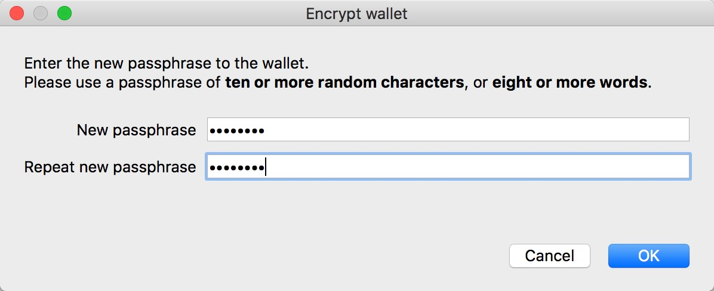
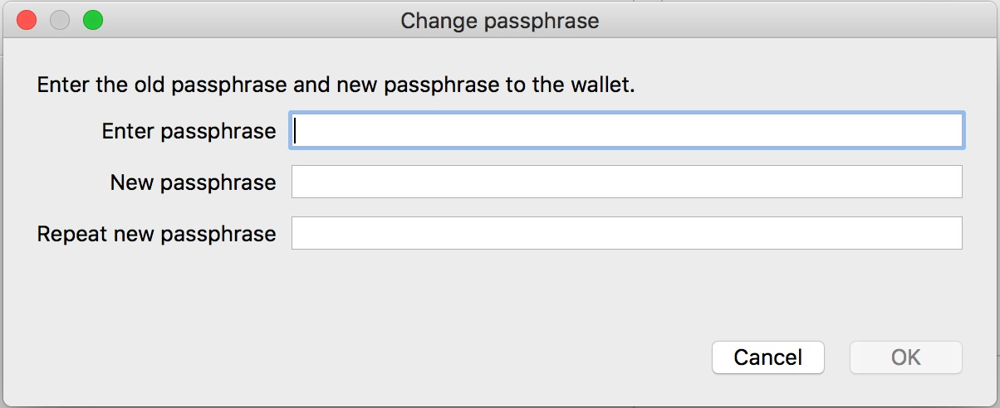

Archived documentation (backup: 4 September 2026). Commands and wallet interfaces may differ in current releases.
Encrypt & Unlock ZHCash Wallet
If you don't know how to deploy a ZHCash node or don't know how to launch a ZHCash wallet ,please refer to the following instructions:
- For command line users：《Guidance of ZHCash Deployment》
- For GUI wallet users (common users)：Commands
Important: After you encrypt wallet or change your pin code, please remember to backup your wallet again!!!
Please do all following things after you successfully installed and run a ZHCash wallet:
Encrypt Wallet
For command line users
ZHCash-cli command to encrypt wallet：
./ZHCash-cli encryptwallet "yourpassword"
note that yourpasswordis the user defined password, please remember it or you might lost your ZHCash.
After encryption, all fund security related actions (like send ZHCash, staking, or dump private keys) will all requiring a password.
For GUI wallet users
ChooseSetting-Encrypt Wallet in the menu, as following:
create a new passphrase and repeat it. The wallet will restart after encryption.

After restart, there will be a lock flag shown on the bottom of the wallet, which means it is already encrypted (locked) ：
Unlock wallet
For command line users
ZHCash-cli command to unlock wallet：
./ZHCash-cli walletpassphrase "yourpassword" 99999
the first argument yourpassword is the passphrase you set when encryption, while the second is required unlock time, the unit is second (like 99999 seconds here).
After unlocking, you can send ZHCash or do other fund security related actions.
If you only want to unlock the wallet for staking, please use ：
./ZHCash-cli walletpassphrase "yourpassword" 99999 true
The first two arguments are the same, and the 3rd argument true means you only want to unlock for staking. After doing this, you can start staking, but other fund security related actions like sending ZHCash or dumping private key still need your passphrase to fully unlock your wallet first.
For GUI wallet users
Go to “Settings-unlock wallet” to unlock your wallet：
enter passphrase to unlock wallet. If you choose For staking only, it means you only unlock the wallet for staking，but other fund security related actions like sending ZHCash or dumping private key are still forbidened. So please unselect For staking only if you want to fully unlock your wallet.
After unlocking, the lock flag on the bottom will switch to unlocked.
Change passphrase
For command line users
command for change passphrase:
./ZHCash-cli walletpassphrasechange "oldpassphrase" "newpassphrase"
oldpassphrase is the old passphrase you set last time，and newpassphrase is the new passphrase you want set。
For GUI wallet users
Go to “Setting-Change Passphrase” to change passphrase：
enter old passphrase and new one to complete modification：
